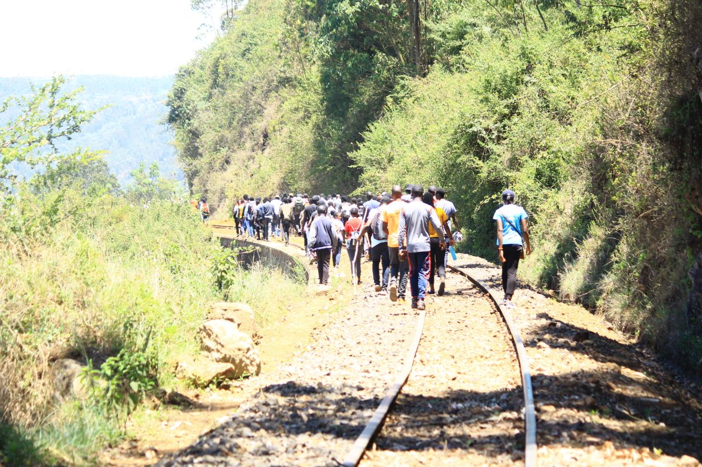
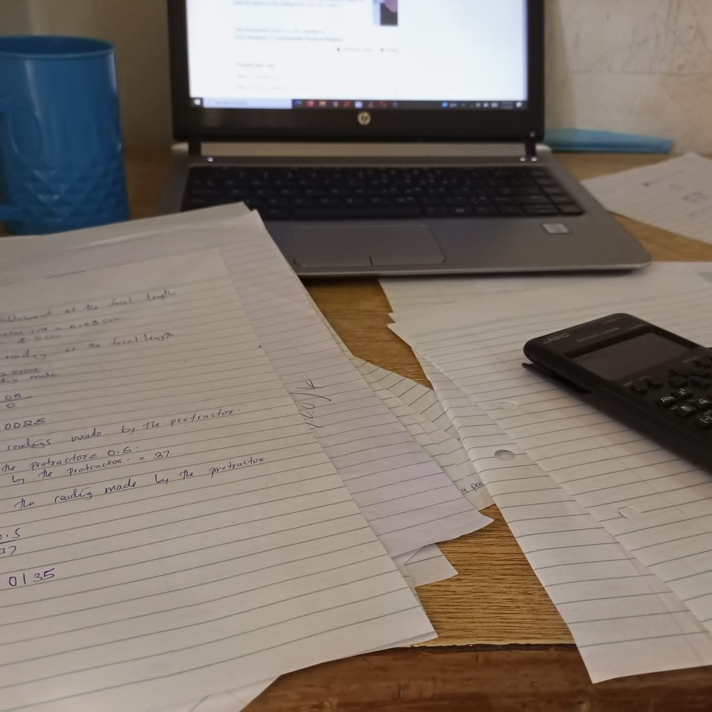
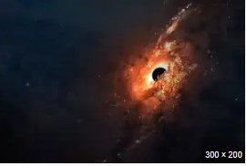

Forestry is the science and craft of creating, managing, planting, using, conserving and repairing forests, woodlands, and associated resources for human and environmental benefits.Forestry is practiced in plantations and natural stands.The science of forestry has elements that belong to the biological, physical, social, political and managerial sciences.Forest management play essential role of creation and modification of habitats and affect ecosystem services provisioning. Modern forestry generally embraces a broad range of concerns, in what is known as multiple-use management, including: the provision of timber, fuel wood, wildlife habitat, natural water quality management, recreation, landscape and community protection, employment, aesthetically appealing landscapes, biodiversity management, watershed management, erosion control,preserving forests as "sinks" for atmospheric carbon dioxide Forest ecosystems have come to be seen as the most important component of the biosphere, and forestry has emerged as a vital applied science, craft, and technology. A practitioner of forestry is known as a forester. Another common term is silviculturist. Silviculture is narrower than forestry, being concerned only with forest plants, but is often used synonymously with forestry. All people depend upon forests and their biodiversity, some more than others. Forestry is an important economic segment in various industrial countries as forests provide more than 86 million green jobs and support the livelihoods of many more people.

In the United States, Canada, the Republic of Ireland, and the United Kingdom, hiking means walking outdoors on a trail, or off trail, for recreational purposes. A day hike refers to a hike that can be completed in a single day. However, in the United Kingdom, the word walking is also used, as well as rambling, while walking in mountainous areas is called hillwalking. In Northern England, Including the Lake District and Yorkshire Dales, fellwalking describes hill or mountain walks, as fell is the common word for both features there. Hiking sometimes involves bushwhacking and is sometimes referred to as such. This specifically refers to difficult walking through dense forest, undergrowth, or bushes where forward progress requires pushing vegetation aside. In extreme cases of bushwhacking, where the vegetation is so dense that human passage is impeded, a machete is used to clear a pathway. The Australian term bushwalking refers to both on and off-trail hiking. Common terms for hiking used by New Zealanders are tramping (particularly for overnight and longer trips), walking or bushwalking. Trekking is the preferred word used to describe multi-day hiking in the mountainous regions of India, Pakistan, Nepal, North America, South America, Iran, and the highlands of East Africa. Hiking a long-distance trail from end-to-end is also referred to as trekking and as thru-hiking in some places. In North America, multi-day hikes, usually with camping, are referred to as backpacking.

Freelance (sometimes spelled free-lance or free lance), freelancer, or freelance worker, are terms commonly used for a person who is self-employed and not necessarily committed to a particular employer long-term. Freelance workers are sometimes represented by a company or a temporary agency that resells freelance labor to clients; others work independently or use professional associations or websites to get work. While the term independent contractor would be used in a different register of English to designate the tax and employment classes of this type of worker, the term "freelancing" is most common in culture and creative industries, and use of this term may indicate participation therein. Fields, professions, and industries where freelancing is predominant include: music, writing, acting, computer programming, web design, graphic design, translating and illustrating, film and video production and other forms of piece work which some cultural theorists consider as central to the cognitive-cultural economy. Depending on the industry, freelance work practices vary and have changed over time. In some industries such as consulting, freelancers may require clients to sign written contracts. While in journalism or writing, freelancers may work for free or do work "on spec" to build their reputations or a relationship with a publication. Some freelancers may provide written estimates of work and request deposits from clients. Payment for freelance work also depends on industry, skills, experience and location. Freelancers may charge by the day, hour, a piece rate, or on a per-project basis.
Travel dates back to antiquity where wealthy Greeks and Romans would travel for leisure to their summer homes and villas in cities such as Pompeii and Baiae. While early travel tended to be slower, more dangerous, and more dominated by trade and migration, cultural and technological advances over many years have tended to mean that travel has become easier and more accessible.[9] Humankind has come a long way in transportation since Christopher Columbus sailed to the new world from Spain in 1492, an expedition which took over 10 weeks to arrive at the final destination; to the 21st century when aircraft allows travel from Spain to the United States overnight. Travel in the Middle Ages offered hardships and challenges, however, it was important to the economy and to society. The wholesale sector depended (for example) on merchants dealing with/through caravans or sea-voyagers, end-user retailing often demanded the services of many itinerant peddlers wandering from village to hamlet, gyrovagues (wandering monks) and wandering friars brought theology and pastoral support to neglected areas, traveling minstrels toured, and armies ranged far and wide in various crusades and in sundry other wars. Pilgrimages were common in both the European and Islamic world and involved streams of travelers both locally and internationally. In the late 16th century, it became fashionable for young European aristocrats and wealthy upper-class men to travel to significant European cities as part of their education in the arts and literature.
 A black hole is a region of spacetime where gravity is so strong that nothing – no particles or even electromagnetic radiation such as light – can escape from it. The theory of general relativity predicts that a sufficiently compact mass can deform spacetime to form a black hole. The boundary of no escape is called the event horizon. Although it has a great effect on the fate and circumstances of an object crossing it, it has no locally detectable features according to general relativity. In many ways, a black hole acts like an ideal black body, as it reflects no light. Moreover, quantum field theory in curved spacetime predicts that event horizons emit Hawking radiation, with the same spectrum as a black body of a temperature inversely proportional to its mass. This temperature is of the order of billionths of a kelvin for stellar black holes, making it essentially impossible to observe directly. Objects whose gravitational fields are too strong for light to escape were first considered in the 18th century by John Michell and Pierre-Simon Laplace. In 1916, Karl Schwarzschild found the first modern solution of general relativity that would characterize a black hole. David Finkelstein, in 1958, first published the interpretation of "black hole" as a region of space from which nothing can escape. Black holes were long considered a mathematical curiosity; it was not until the 1960s that theoretical work showed they were a generic prediction of general relativity. The discovery of neutron stars by Jocelyn Bell Burnell in 1967 sparked interest in gravitationally collapsed compact objects as a possible astrophysical reality. The first black hole known was Cygnus X-1, identified by several researchers independently in 1971.